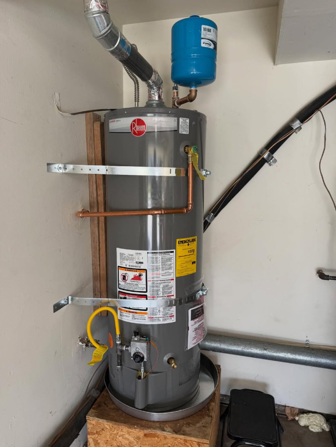

Plumber in Carmichael, CA
Carmichael is known for established homes and mature properties, where plumbing calls often involve older valves, supply lines, drains, fixtures and water-heating equipment.
Plumbing service that fits Carmichael.
Older plumbing does not always need an oversized solution. Straight Forward Plumbing starts with the problem in front of you and explains the practical options.

One call for the plumbing work that keeps your property moving.
Residential and light commercial service for the repairs, replacements and installations customers request most.
Drain & sewer service
Clogged drains, root intrusion, slow lines and sewer troubleshooting.
Water heaters
Tank and tankless repair, replacement, installation and flushing.
Fixtures & toilets
Faucets, sinks, toilets, bidets and clean fixture upgrades.
Leaks & piping
Leak diagnosis, valves, supply piping and water-line repairs.
What to expect in Carmichael.
Tell us what is happening and where you are. We will use that information to help determine the right next step and current scheduling.
Can I request same-day plumbing service?
Yes. Same-day service can be requested in Carmichael when the schedule and job location allow. For current availability, call (916) 201-2080.
What kinds of plumbing jobs do you take?
Common calls include clogged drains, water-heater service, fixture and toilet replacement, leaks, piping, valves and installation work.
Do you work outside Carmichael?
Yes. Straight Forward Plumbing serves Sacramento and surrounding communities, with dedicated service-area pages for nearby cities.
Get Straight Forward Plumbing on the phone.
Describe the issue and your Carmichael location, then ask about the earliest available service window.